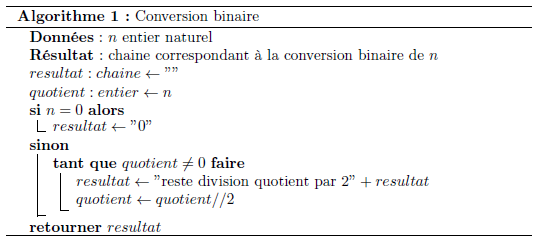

Représentation de l’information - Exercices¶
Manipulations binaires en python¶
Préambule: types natifs¶
Python possède trois types numériques natifs, parmi lesquels on peux citer les entiers relatifs (integers) et les nombres décimaux à virgule flottante (float). Pour manipuler du texte, on dispose du type chaine de caractères (string). Ces dernières sont déclarées en étant entourées de double quotes ” ” ou de simples quotes ‘ ‘. Par exemple
mavariable = "programmation"```
Pour accéder au type d'un objet `obj`on utilise la fonction native `type()` sur cet objet:
```python
type(obj)
Donner le type des objets suivants: 11, 11.0 et “11”. Représentent-ils le même objet ?
Convertisseur decimal binaire version 1¶
Python possède une fonction native qui permet la conversion d’un entier en binaire: la fonction bin().
Consulter la documentation associée à cette fonction.
Convertir l’entier 77 en binaire et l’affecter à une variable nommée
valeurbinaire.Quel est le type de
valeurbinaire?On souhaiterait afficher
valeurbinairesans le préfixe0b. La fonction (on dit ici méthode associée aux chaines de caractères) qui pourrait être utilisée eststr.lstrip(). Exemple d’utilisation:
com = "# Ceci n'est pas un commentaire valide en python"
print(com.lstrip("# "))
Ceci n'est pas un commentaire valide en python
Consulter la documentation associée à
str.strip.Afficher
valeurbinairesans le préfixe0b.
Convertisseur decimal binaire version 2¶
Dans cette partie on va implémenter en python l’algorithme évoqué au paragraphe “Conversion décimal - binaire”. L’algorithme est écrit en pseudo-code, dans lequel l’affectation est notée \(\leftarrow\) et la chaine de caractères vide “”. 
Ecrire une fonction en python
dec2bin(n)qui retourne la conversion en binaire d’un entier \(n\).
Indications:
en python le reste de la division de \(a\) par \(b\) est obtenu par
a % b;la division entière de \(a\) par \(b\) s’obtient par
a // b;pour convertir un nombre \(x\) en caractère \("x"\) on utilise
str(x).
Justifier simplement que la boucle tant que termine.
Pour les plus rapides: retourner le résultat sur 16 bits en complétant le cas échéant avec des zéros. Indication: se documenter sur la fonction
str.zfill().
Manipulations hexdécimales en python¶
Préambule¶
Python possède une fonction native permettant de convertir un entier en hexadécimal: hex().
Consulter la documentation de
hex.Convertir \(N_1=352_{10}\) en hexadécimal.
Afficher la valeur sans le préfixe ‘0x’. Conseil: voir exercice précédent
Traitement d’une chaine hexadécimale¶
Une fonction dont le code est donnée ci-dessous est proposée. Malheureusement, une partie de sa spécification n’a pas été complétée.
Que réalise cette fonction ? Faire des tests avec les nombres “10FA1000” et “84BD1001”.
Afficher la conversion en entier de ces nombres préalablement transformés par la fonction
big2little().
def big2little(nh):
"""
"""
resultat = ""
l = len(nh)
for i in range(0,l-1,2):
resultat = nh[i:i+2] + resultat
return resultat
Application: entête d’un fichier image¶
Les fichiers images au format BMP sont bien documentés. On peut aisemment consulter les informations avec un éditeur hexadecimal. Les 2 premiers octets servent à identifier le fichier et les 4 suivants nous donnent la taille du fichier (en hexadécimal!).
En python l’ouverture d’un fichier se fait avec la fonction native open() et obeit à la construction suivante:
f = open('nom_fichier','rb')#l'option 'rb' signifie read (mode lecture) binary (mode binaire)
#traitement(s)
#
f.close()#important !!
La séquence f = open() retourne un objet “fichier” qui dispose de nombreuses méthodes, parmi lesquelles on peut citer read(n) qui permet de lire \(n\) octets.
Ouvrir le fichier “alien.bmp” en lecture binaire.
Lire et afficher le type de fichier (lire les 2 premiers octets)
Lire les 4 octets suivants et les stocker dans une variable
taille_big.Stocker dans une variable
taillela taille du fichier BMP. Il suffit de passertaille_bigà la fonctionbig2little().Convertir cette taille en entier (fonction
int()). Cette valeur est-elle cohérente avec celle fournie par le système d’exploitation.